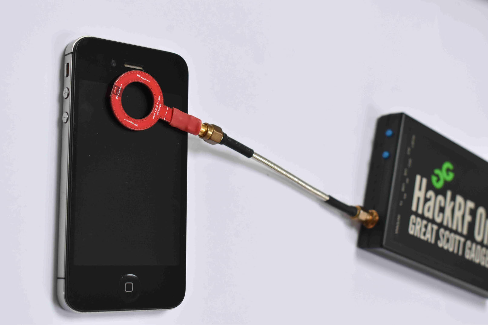

Electromagnetic Side-Channel Analysis
Computing devices are generating electromagnetic (EM) radiation due to their internal opertations, such as the CPU executing instructions and handling data. These radiation are well-known to be leaking information about the internal operations of the device. The field of research that exploits these unintended radiation from computers for the purpose of extracting data is called Electromagnetic Side-Channel Analysis (EM-SCA). We can extract various internal operational detais of a target device through EM-SCA techniques.

Read more about this research area:
Asanka Sayakkara and Nhien-An Le-Khac , “Electromagnetic Side- Channel Analysis for IoT Forensics: Challenges, Framework, and Datasets,” in IEEE Access, vol 9, pp. 113585-113598, 2021. doi: https://doi.org/10.1109/ACCESS.2021.3104525 [PDF]
Asanka Sayakkara, Le-Khac, N-A., and Scanlon, M., "A survey of electromagnetic side-channel attacks and discussion on their case-progressing potential for digital forensics", Elsevier Digital Investigation, 2019. [PDF]